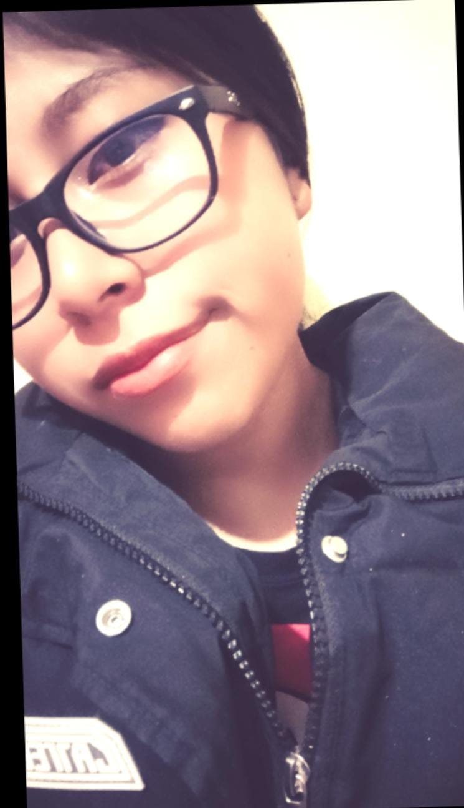
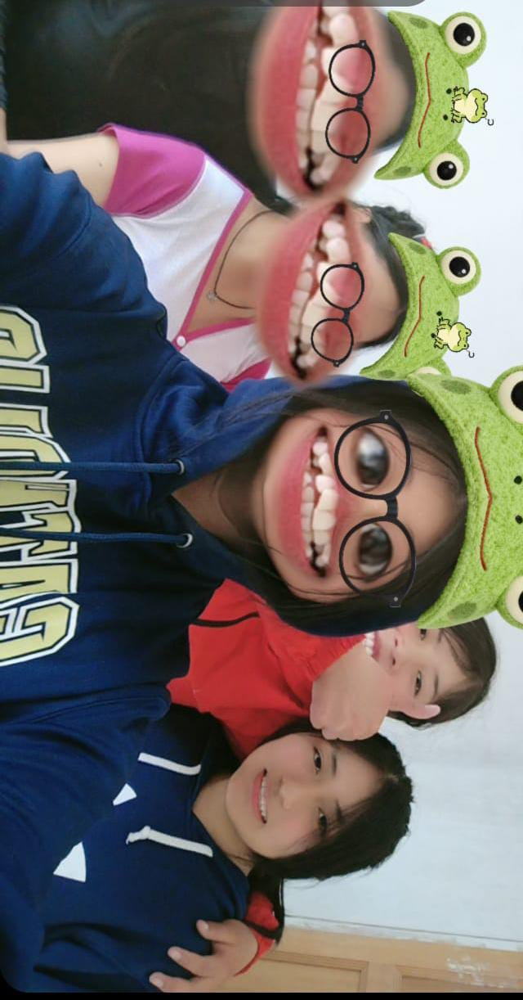
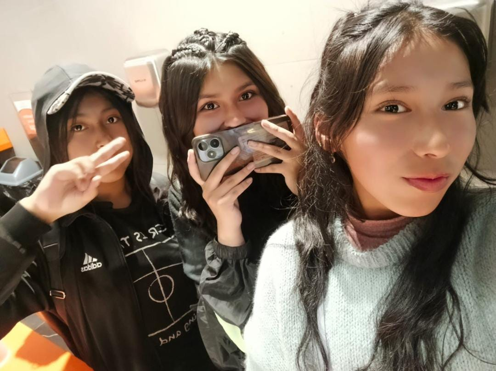
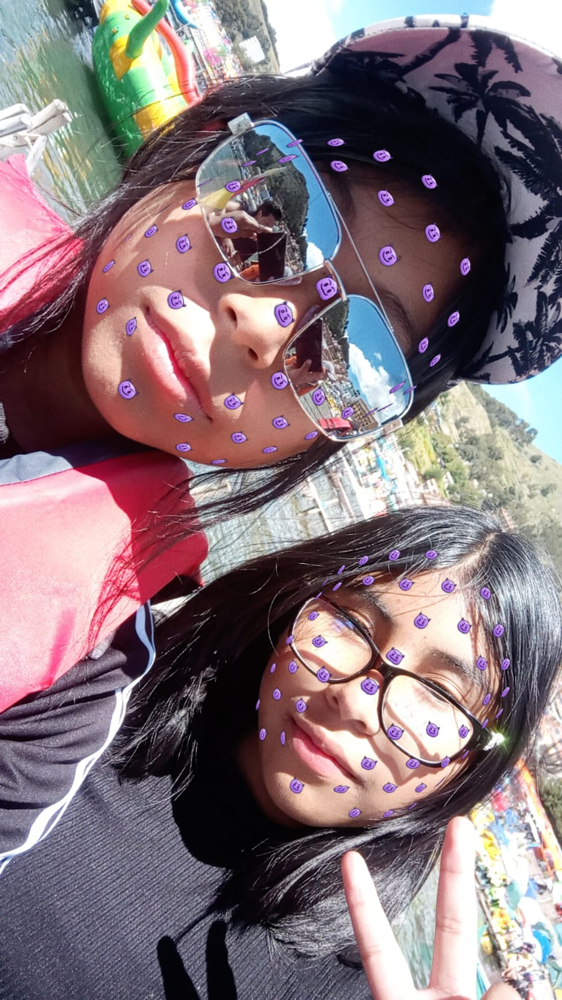
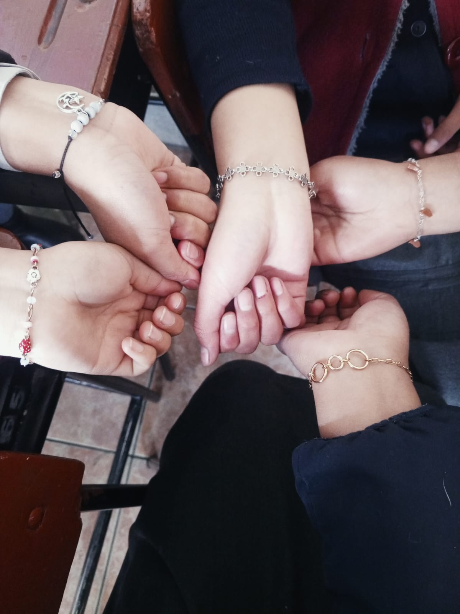

|
MI HUELLA DIGITAL
"Una página para recordar, compartir y soñar" |
INICIO Y PRESENTACIÓN | MIS RECUERDOS | MIS HABILIDADES | MI FUTURO | MI PROMOCIÓN
| "NO ESTAMOS AQUÍ PARA PASAR DESAPERCIBIDOS, SINO PARA DEJAR UNA HUELLA QUE EL TIEMPO NO PUEDA BORRAR." ✨ |
Nombre de la estudiante: Gabriela Araceli Aruni Condori
Sobre mí y mi personalidad
Soy Gabriela Araceli Aruni Condori, una estudiante boliviana que está viviendo una de las etapas más importantes de su vida: los últimos años del colegio. Me considero una persona curiosa, sensible, soñadora y con muchas ganas de descubrir lo que existe más allá de lo que conozco. A veces puedo pensar demasiado las cosas y preocuparme por pequeños detalles, pero también he aprendido que sentir profundamente es una forma de apreciar cada momento. Me gusta ayudar a los demás, escuchar, aprender y disfrutar de las personas que hacen que cada día tenga un significado especial.
Me gustan muchas cosas y justamente eso hace difícil escoger una sola. Disfruto la música, las películas, la fotografía, los diseños, la tecnología y conocer lugares nuevos. También me gusta crear, imaginar proyectos y encontrar nuevas maneras de expresar lo que pienso. No quiero limitarme a una sola pasión; quiero descubrir, experimentar y aprender hasta encontrar aquello que realmente me haga decir: "esto es lo que quiero hacer". Creo que todavía tengo mucho por conocer de mí misma y eso también forma parte de crecer.
Mi etapa escolar ha estado llena de momentos buenos, dificultades, aprendizajes y cambios. Hubo ocasiones en las que pensé que no era suficiente, momentos en los que alcanzar una meta parecía demasiado difícil y otros en los que pude sentirme orgullosa de mí misma. Con cada caída aprendí que perder una vez no significa perder para siempre. Aprendí a volver a intentarlo, a confiar un poco más en mí y a valorar el camino, no solamente el resultado. Ahora que estoy llegando al último año, entiendo que crecer también significa aceptar que algunas etapas terminan para que otras puedan comenzar.
Mi fotografía

Momentos inolvidables y experiencias significativas
Primer momento: Uno de los recuerdos que más valoro es haber conocido personas que terminaron convirtiéndose en una parte importante de mi vida. Entre conversaciones, trabajos, juegos, bromas y momentos inesperados, fui descubriendo que el colegio no solamente se trata de aprender materias. También se trata de encontrar personas con las que puedes compartir una parte de tu historia.
Segundo momento: Los aniversarios, paseos, excursiones y actividades del colegio dejaron recuerdos que difícilmente se podrán repetir de la misma manera. Cada salida tenía algo diferente: risas, fotografías, conversaciones y momentos que quizá en ese instante parecían pequeños, pero que ahora tienen un valor enorme. Son precisamente esos momentos espontáneos los que hacen que una etapa escolar sea imposible de olvidar.
Tercer momento: Los recreos siempre fueron pequeños espacios de libertad dentro del día. Quince minutos podían convertirse en historias completas: juegos, bromas, conversaciones y risas que terminaban demasiado rápido. Ahora que queda poco para terminar el colegio, esos momentos tienen un significado diferente, porque sé que algún día serán recuerdos que contaré con una sonrisa.
Anécdotas especiales del aula
Primera anécdota: Las frases y ocurrencias que se repiten en el curso terminan convirtiéndose en parte de nuestra identidad. Algunas comenzaron como simples bromas y terminaron siendo expresiones que todo el salón reconoce.
Segunda anécdota: También están esos momentos en los que teníamos que presentar trabajos, defender nuestras ideas o enfrentarnos a una actividad para la que quizá no estábamos completamente preparados. Aunque en el momento parecían situaciones difíciles, ahora forman parte de las historias que recordaremos.
Lo que más valoro de mi etapa escolar
|
La etapa escolar me enseñó que crecer no significa solamente avanzar de curso o conseguir buenas calificaciones. Significa aprender de los errores, conocer personas, descubrir capacidades que no sabía que tenía y comprender que cada experiencia deja algo en nosotros. Los amigos hicieron que muchos días fueran más alegres y que los momentos difíciles fueran más fáciles de soportar. Los profesores también dejaron enseñanzas que van más allá de una materia. Algunos me enseñaron conocimientos; otros, paciencia, responsabilidad, esfuerzo y confianza. Hoy miro hacia atrás y veo una versión de mí que ha cambiado muchísimo. No soy la misma persona que comenzó este camino y probablemente tampoco seré la misma cuando termine. Me llevo recuerdos, aprendizajes, amistades, errores, logros y muchas historias. Si pudiera resumir mi etapa escolar en una sola idea, sería esta: "No fueron años perfectos, pero fueron años que valieron la pena." |
Galería de recuerdos
Foto del grupo de amigos:

Foto de un encuentro con amigas:


Mis habilidades personales y técnicas
Considero que algunas de mis principales habilidades son escuchar a los demás, trabajar en equipo, aprender rápidamente cuando algo realmente me interesa y buscar soluciones cuando aparece un problema. También me gusta la fotografía, la creatividad, las matemáticas, la física, la programación y el diseño. No considero que todo lo que hago sea perfecto, pero disfruto aprender y mejorar.
Materias y áreas de mayor interés
Entre las materias que más llaman mi atención están Matemáticas, Física, Química, Lenguaje, Biología, Arte y áreas relacionadas con la tecnología. Me gusta especialmente cuando una materia permite combinar creatividad y razonamiento. También disfruto escribir, crear ideas y descubrir cómo funcionan las cosas que existen a nuestro alrededor.
Trabajos y proyectos destacados
Uno de los aspectos que más orgullo me produce es terminar un proyecto y poder mirar el resultado pensando: "yo hice esto". Durante el colegio participé en diferentes actividades y trabajos, desde proyectos artísticos hasta ejercicios de programación. Cada uno me dejó una enseñanza diferente y me ayudó a descubrir nuevas capacidades.
Galería de mis mejores trabajos
Imagen de mi proyecto principal:

Metas personales y profesionales
Metas a corto plazo: Terminar el colegio de la mejor manera, disfrutar los últimos momentos con mis compañeros, celebrar nuestra promoción y guardar todos esos recuerdos. Después quiero prepararme para la siguiente etapa y descubrir con más claridad qué camino quiero seguir.
Metas a mediano plazo: Ingresar a una carrera que realmente me guste, aprender nuevas habilidades, conocer personas diferentes y comenzar a construir mi independencia. Quiero aprovechar cada oportunidad para crecer y acercarme poco a poco a la persona que quiero llegar a ser.
Metas a largo plazo: En algunos años quiero mirar hacia atrás y sentir que todo el esfuerzo tuvo sentido. Me gustaría tener una profesión que me apasione, conocer diferentes lugares, ayudar a mi familia y construir una vida de la que pueda sentirme orgullosa. No quiero dejar de aprender ni de perseguir nuevos sueños.
Carreras, universidades o institutos de interés
Me llaman la atención carreras como Arquitectura, Ingeniería, Diseño y otras áreas relacionadas con las ciencias y la tecnología. Me interesan especialmente aquellas que permitan combinar creatividad, imaginación, razonamiento y la posibilidad de crear algo que pueda servir a los demás.
Qué deseo aprender o desarrollar más adelante
Quiero mejorar mis conocimientos de inglés y aprender otros idiomas. También quiero seguir desarrollando mis habilidades en fotografía, diseño, programación y tecnología. Quiero viajar, conocer diferentes culturas y atreverme a hacer cosas que actualmente todavía me producen miedo.
Carta a mi yo del futuro
| "Querida Gabriela del futuro: Si estás leyendo esto, significa que sobreviviste a muchas cosas que hoy todavía parecen enormes. Espero que nunca hayas olvidado de dónde vienes ni a todas las personas que estuvieron contigo durante el camino. Si alguna vez fallaste, espero que hayas tenido el valor de comenzar nuevamente. No dejes de soñar, de aprender, de reír y de ser tú misma. No necesitas tener una vida perfecta; solo necesitas una vida que tenga sentido para ti. Y si alguna vez dudas de todo lo que eres capaz de hacer, recuerda a la Gabriela que escribió estas palabras: ella ya confiaba en ti. 💛" |
Nombre o lema oficial de la promoción: "Dejamos huellas, construimos sueños y abrimos nuestro propio camino."
Mensaje de agradecimiento
A mis compañeros: Gracias por formar parte de esta etapa. Gracias por las risas, las bromas, los trabajos, las discusiones, las aventuras y todos esos pequeños momentos que hicieron que el colegio fuera mucho más que asistir a clases. Tal vez nuestros caminos se separen después de graduarnos, pero cada uno llevará consigo una parte de esta historia.
A mis profesores: Gracias por enseñarnos, corregirnos, tener paciencia y acompañarnos durante estos años. Cada enseñanza, incluso aquellas que en su momento no comprendíamos, terminó aportando algo a nuestra formación. Gracias por ayudarnos a prepararnos para una etapa que será completamente diferente.
A mi familia: Gracias por estar conmigo en cada logro y también en cada momento difícil. Gracias por creer en mí incluso cuando yo misma dudaba. Todo lo que he conseguido hasta ahora también lleva una parte de ustedes. Espero poder devolverles algún día todo el amor, apoyo y confianza que me han dado. ❤️
Reflexión sobre las enseñanzas de esta etapa
|
El colegio me enseñó que la vida no siempre
sigue el camino que imaginamos. A veces tendremos
que comenzar nuevamente, cambiar nuestros planes
o aceptar que algo no salió como queríamos.
Pero cada experiencia puede convertirse en una
enseñanza si tenemos el valor de continuar.
|
"El final de una etapa no es el final de nuestra historia; es el comienzo de todo lo que todavía podemos llegar a ser." ✨
| 🔝 Volver al inicio |